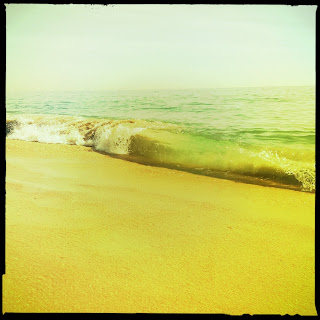

Recovered weblog entry
Roll of the tide

No zoom lens = great efforts to shoot and run. It may not look like it, but I was right next to the waves as they rolled in. Lens: Jimmy
Film: Blanko Noir

Recovered weblog entry

No zoom lens = great efforts to shoot and run. It may not look like it, but I was right next to the waves as they rolled in. Lens: Jimmy
Film: Blanko Noir